About
About Projects
Projects Books
Books Games
Games Stories
Stories Store
Store Collection
Collection Notes
Notes2023.11.19 This is a mirror of an article by Grace Bonney on Design Sponge. The original website hosting it is now down. I mirrored it because I quite like it and would hate for it to be lost.
Note: I altered some of the tools and materials needed so they're a bit more basic. The rest is unaltered.
Bookbinding 101: Five-Hole Pamphlet Stitch
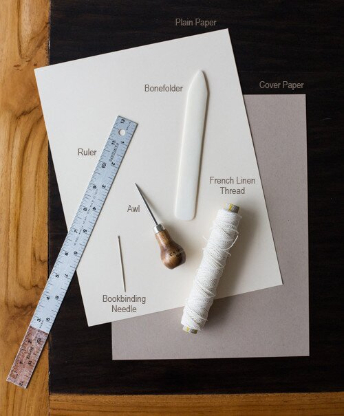Tools
- 1x flat, polished tool used to score a fold in the paper into a permanent position (whatever works)
- 1x thick needle (sail needle will work)
- 1x pair of scissors
- 1x ruler
- 1x sewing awl
Materials
- 1 roll thread
- 5 sheets (A4) paper for pages
- 1 sheet decorative (A4) paper for cover
Instructions
Folding a sheet in half yields a folio. A signature is a compilation of two or more loose folios. The simplest method of binding a single signature codex, or a book bound on one edge, is with a pamphlet stitch. In this technique, the cover and signature are sewn at once. There are three basic variations of the pamphlet stitch: the three-hole (station), the four-hole and the five-hole. Today, I’ll share a tutorial for my favorite variation — the five-hole pamphlet stitch.
1. Using your bone folder, fold each of the five “pages” in half and nest them together.
2. Fold the “cover” in half.
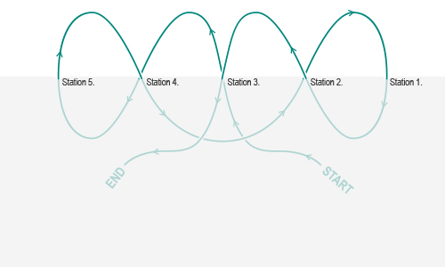 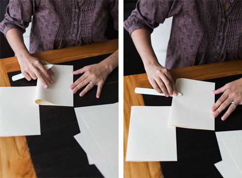3. Using your ruler and a pencil, mark five sewing stations. Station 3 is exactly in the center of the spine. Stations 2 and 4 are equidistant from the center. (I marked them 1.5″ from Station 1.) Stations 1 and 5 are equidistant from Stations 2 and 4. (I marked them 1.5″ from Stations 2 and 4, respectively.)
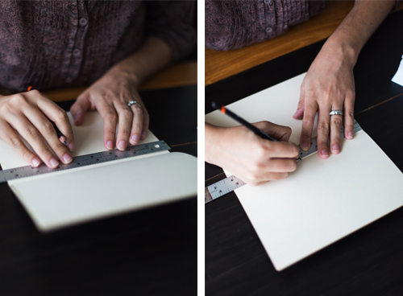 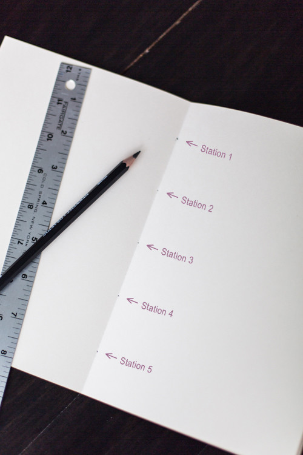4. Using your awl, pierce the sewing stations.
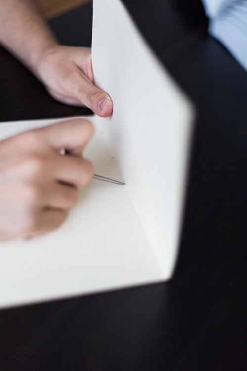5. Thread your needle. Do not tie a knot just yet!
6. To bind: Begin on the inside at Station 3. Pull your needle through Station 3. Pull all but 2″ of the thread to the outside.
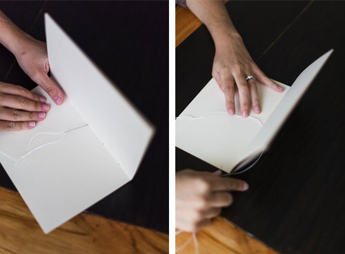7. Go through Station 4 to the inside.
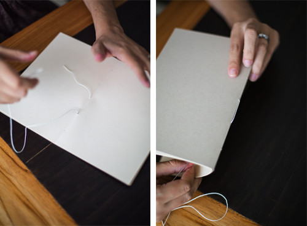8. Go through Station 5 to the outside.
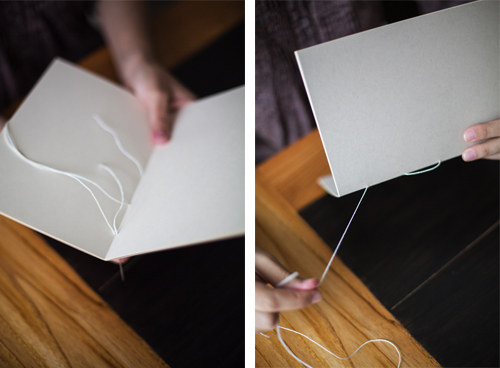9. Go through Station 4 to the inside.
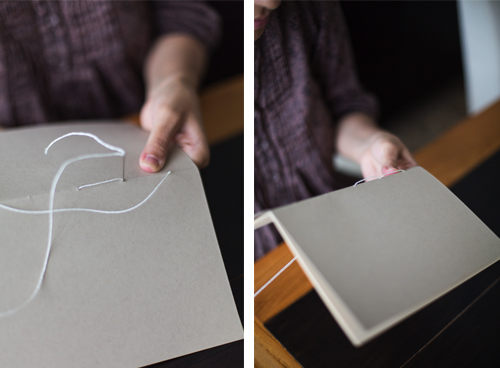10. Go through Station 2 to the outside.
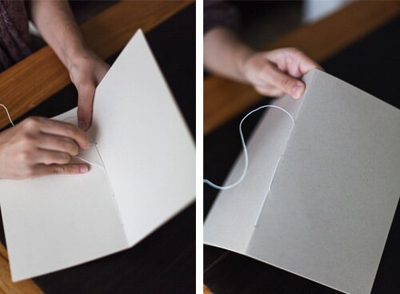11. Go through Station 1 to the inside.
12. Go through Station 2 to the outside.

13. Go though Station 3 to the inside. Tie a square knot around the long stitch, which crosses over Station 3.
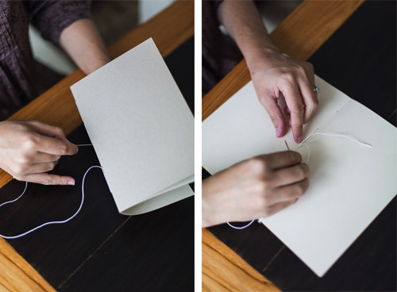 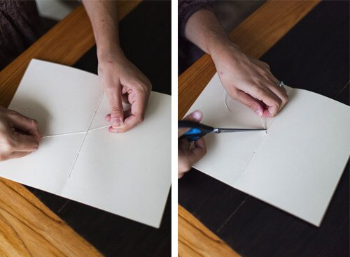